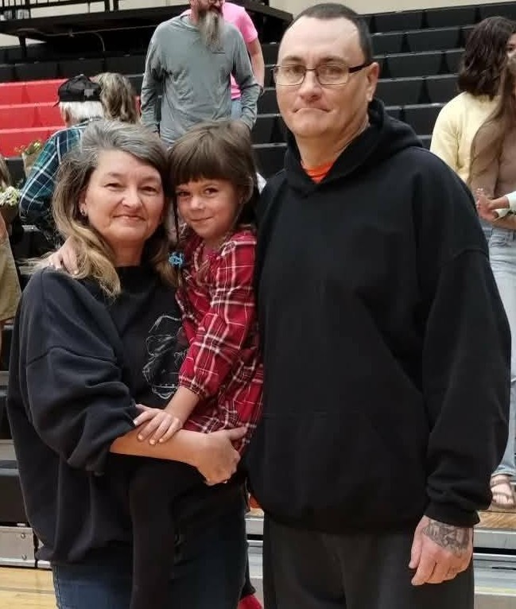

Introduction
I am married to my best friend, Sherri Hess. She was born on October 30, 1973, and has built a life centered on determination, creativity, and the importance of family. Throughout the years, she has embraced new opportunities, overcome challenges, and continued learning, believing that every experience helps shape who a person becomes.
One of Sherri's proudest accomplishments was earning her GED in 1994, followed by completing her bachelor's degree in accounting in 2019. These achievements reflect her belief that it is never too late to pursue a goal through hard work and perseverance.
Creativity has always played an important role in her life. She began cross-stitching as a teenager and still enjoys it today. Over the years, she has expanded her interests to include painting, diamond art, and reading. In 2022, she challenged herself to learn the bass guitar, proving that she is always willing to try something new.
Family is at the heart of everything Sherri does. She is the proud mother of two daughters and a loving grandmother to five grandchildren. Spending time with her family and creating lasting memories brings her the greatest happiness.
When she is not working or enjoying time with family, Sherri loves hiking, swimming, rafting, motorcycle riding, collecting carousel music boxes, and playing racing video games. Her adventurous spirit and positive outlook inspire her to keep learning and growing.
Accomplishments and Goals
- 1989: Learned cross-stitching
- 1994: Earned G.E.D.
- 1995: First daughter was born
- 1999: Second daughter was born
- 2001: Married Mitch Hess
- 2019: Graduated college with a bachelor's degree in accounting
- 2022: Began playing bass guitar
| Year | Achievement |
|---|---|
| 1989 | Learned cross-stitching |
| 1994 | Earned G.E.D. |
| 1995 | First daughter was born |
| 1999 | Second daughter was born |
| 2001 | Married Mitch Hess |
| 2019 | Graduated college with a bachelor's degree in accounting |
| 2022 | Began playing bass guitar |